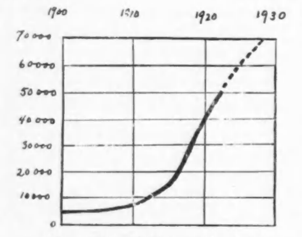

The Challenge of Detroit
In Detroit, Michigan, a black man has shot into a mob which was threatening him, his family, his friends and his home in order to make him move out of the neighborhood. He killed one man and wounded another.
~~~~~~~~~~~~~~~
Immediately a red and awful challenge confronts the nation. Must black folk shoot and shoot to kill in order to maintain their rights or is this unnecessary and wanton bloodshed for fancied ill? The answer depends on the facts. The Mayor of Detroit has publicly warned both mob and Negroes. He has repudiated mob law but he adds, turning to his darker audience, that they ought not to invite aggression by going where they are not wanted. There are thus two interpretations:
- A prosperous Negro physician of Detroit, seeking to get away from his people, moves into a white residential section where his presence for social reasons is distasteful to his neighbors.
- A prosperous Negro physician of Detroit, seeking a better home with more light, air, space and quiet, finds it naturally in the parts of the city where white folk with similar wants have gone rather than in the slums where most of the colored are crowded.
Which version figures: is true? See the figures:

Negro Population of Detroit
1900
| |
| 1910 | 5,741 |
| 1920 | 40,838 |
| 1925 | 60,000 (estimated) |
Two thirds of this population in 1920 were crowded into three wards—the Third, Fifth and Seventh. Meantime the total population of Detroit has more than doubled in ten years and the people have reached out on all sides to new dwelling places. Have the Negroes no right to rush too? Is it not their duty to seek better homes and, if they do, are they not bound to “move into white neighborhoods” which is simply another way of saying “move out of congested slums”?
Why do they not make their own new settlements then? Because no individual can make a modern real estate development; no group of ordinary individuals can compete with organized real estate interests and get a decent deal. When Negroes have tried it they have usually had miserable results; in Birmingham, Alabama, twenty years since, they bought a nice street and lined it with pretty homes; the city took all its prostitutes and stuck them into a segregated vice district right behind the pretty homes! In Macon, Savannah, New Orleans and Atlanta crime and prostitution have been kept and protected in Negro residence districts. In New York City, for years, no Negro could rent or buy a home in Manhattan outside the “Tenderloin”; and white Religion and Respectability far from stretching a helping hand turned and cursed the blacks when by bribery, politics and brute force they broke into the light and air of Harlem. Some great leaders in Negro philanthropy like Clarence Kelsey formed a financial bloc to push the Negroes out of Harlem, to refuse mortgages to landlords renting to them; but only one practical project of furnishing them decent quarters came to fruition.
~~~~~~~~~~~~~~~
Dear God! Must we not live? And if we live may we not live somewhere? And when a whole city full of white folk led and helped by banks, Chambers of Commerce, mortgage companies and “realtors” are combing the earth for every decent bit of residential property for whites, where in the name of God can we live and live decently if not by these same whites? If some of the horror-struck and law-worshipping white leaders of Detroit instead of winking at the Ku Klux Klan and admonishing the Negroes to allow themselves to be kicked and killed with impunity—if these would finance and administer 2 decent scheme of housing relief for Negroes it would not be necessary for us to kill white mob leaders in order to live in peace and decency. These whited sepulchres pulled that trigger and not the man that held the gun.
~~~~~~~~~~~~~~~
But, wail the idiots, Negroes depress real estate values! This is a lie—an ancient and bearded lie. Race prejudice decreases values both real estate and human; crime, ignorance and filth decrease values. But a decent, quiet, educated family buying property in a decent neighborhood will not affect values a bit unless the people in that neighborhood hate a colored skin more than they regard the value of their own property. This has been proven in a thousand instances. Sudden fall in values comes through propaganda and hysteria manipulated by real estate agents or by Southern slave drivers who want their labor to return South; or by ignorant gossip mongers. Usually Negroes do not move into new developments but into districts which well-to-do whites are deserting. The fall in values is not due to race but to a series of economic readjustments and often, as in Baltimore, real estate values were actually saved and raised, not lowered, when black folk bought Druid Hill Avenue and adjacent streets. Certainly a flood of noisy dirty black folk will ruin any neighborhood but they ruin black: property as well as white, and the reason is not their color but their condition. And whom, High Heaven, shall we blame for that?
~~~~~~~~~~~~~~~
But these facts make no difference to organized American Negro haters. They are using every effort to maintain and increase race friction. In the South time and time again communities have almost forgotten race lines until the bitter, hate-preaching liar stirred it up again. The whole present “Anglo-Saxon” and “race purity” agitation in Virginia has arisen because one white family openly acknowledged its colored grandmother! The whole crusade in Detroit has come to a head because, in 1920, 663,000 Southern whites had migrated and were living in Wisconsin, Michigan, Illinois, Indiana and Ohio. Their numbers are swelling. They are largely clerks, artisans and laborers, not illiterate but ignorant of the modern world and forming by habit the lawless material of mobs. They are ruining the finer democracy of the Middle West and using the Negro as an excuse.
What shall we do? I know a black man. He is a professional man and a graduate of a great eastern school. He has studied abroad. His wife was educated in a good western school and is a quiet housewife. His son is a college graduate and a high school teacher. They have never been arrested. They conduct themselves as cultured folk. This man is living in an apartment in Harlem. He would like more air and sunlight and less noise. He would like a new, small, modern house in the further Bronx or in the hills of Westchester or New Jersey or in the higher part of Queens. He sees daily in the papers new homes advertised suitable to his means—$500, $1,000 even $2000 down, the rest as rent. Can he buy one of these? Not without plotting, deception, insult or murder.
For instance: A man bought a modest home in Staten Island. He was a mail carrier with a fine record; his wife was a school teacher, educated and well-bred. They had four sturdy children in school. As a result he has been mobbed and insulted, his property injured, his glass and shrubbery broken, his insurance cancelled, his life threatened, his existence made miserable. His neighbors do everything to insult him and his, even to crossing the street to avoid passing him. He sticks to his home even though offered a profit to sell, “on principle.” He is “colored.”
Another man in Detroit bought a fine home in a former exclusive district which is now changing. He was a physician with a large practice, the founder of a hospital, public-spirited and well-liked. He had married the daughter of perhaps the greatest of the interpreters of Negro folk songs with world-wide reputation. He moved in. A mob of thousands appeared, yelling and cursing. They broke his windows, threw out his furniture and he and his family escaped under police protection. He gave up his home, made no resistance, moved back whence he came, filed no protest, made no public complaint. He was “colored.”
A little later another physician in Detroit bought another beautiful home and moved in. A mob—almost the same mob—came, cursed, threw stones and ordered him to move. He gathered his family and friends within and locked the door. Five or six thousand people lined the streets. The police set traffic officers to divert the traffic that could not get through. The mob invaded his yard and approached his doors. He shot and shot to kill. His wife and his friends are now in jail charged with Murder in the first degree! He was “colored.”
Gentle Reader, which of these three examples shall my friend of Harlem follow? Which would you follow if you were “free,” black and 21?